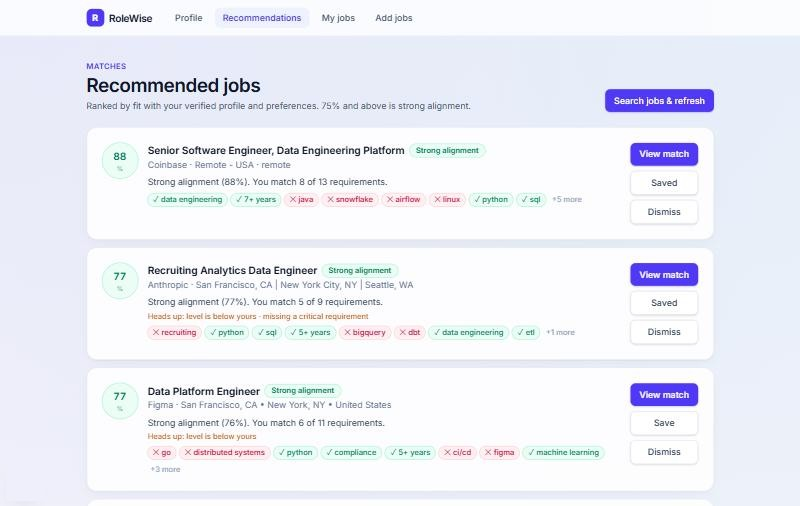
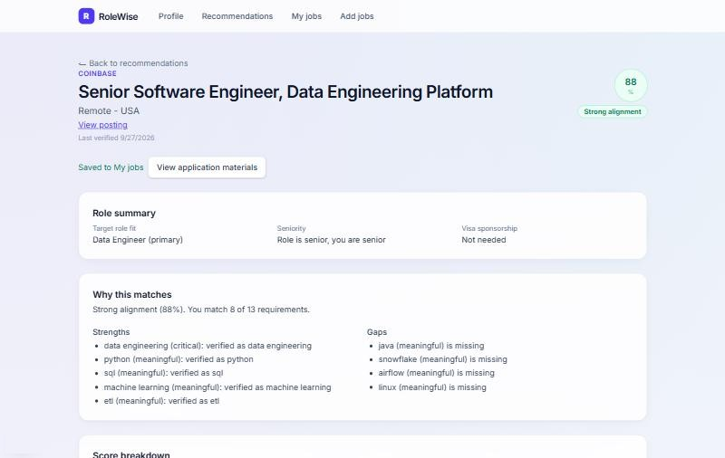
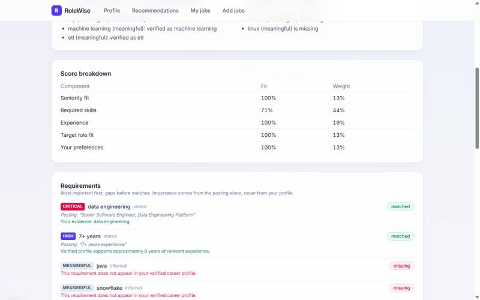

An AI career agent that never speaks for you
RoleWise matches a person to real job postings, explains every score, and shows where they fall short, using only facts they have verified.
The Interface
Screenshots from a local run of the app.



How It Works
- UploadA resume goes to S3 through a presigned URL.
- ExtractA worker turns it into career facts, all marked unverified.
- VerifyThe person edits and confirms each fact.
- IngestJobs arrive from public Greenhouse, Lever, and Ashby feeds, or by paste.
- ScoreFixed rules in code compute the match, with no language model involved.
- ExplainGap analysis runs, then the model writes the explanation.
- DraftTailored documents are generated and fact-checked on request.
Key Decisions
Code sets the score
The model labels requirements and explains results, but the match number always comes from deterministic rules.
Facts must be verified
Nothing parsed from a resume is used for matching or writing until the person confirms it.
Every line cites a fact
A fact checker traces each number and named skill to a verified fact and removes lines that fail.
No acting on your behalf
Documents are for the person to read and download. The app never submits an application.
Stack
Frontend
Next.js 15 and TypeScript.
Backend
FastAPI, SQLAlchemy, Alembic, and a background worker.
Data
Postgres with pgvector, S3 for files, and SQS for tasks.
AI
Amazon Bedrock, with a deterministic stub for local development.
Auth
Cognito with Google Sign-In, using Authorization Code and PKCE.
Infrastructure
AWS ECS, RDS, and CDK, with Docker Compose locally.
Quality and Security
- 135 backend tests plus 21 database tests against an isolated test database at the last recorded full run.
- A 72-item QA checklist run across every feature, with all 5 bugs it found fixed.
- A 13-area security audit. The top 3 findings were fixed, and 2 low-severity findings remained open.
- Authentication fails closed, so an unconfigured environment cannot fall back to the local sign-in bypass.
- Resume text is treated as untrusted input, with upload limits of 10 MB and 20 pages.
What I Learned
Testing with a real resume found what fixtures had missed. One upload produced 17 skills but no roles or education. Reproducing it against the actual PDF exposed several separate bugs, including section order and PDF bullet characters, and fixing those revealed a date-sorting bug that had been invisible until roles existed. The same resume then produced all 4 roles and 3 education entries.
AI output should be checked by code, not trusted because it sounds right.